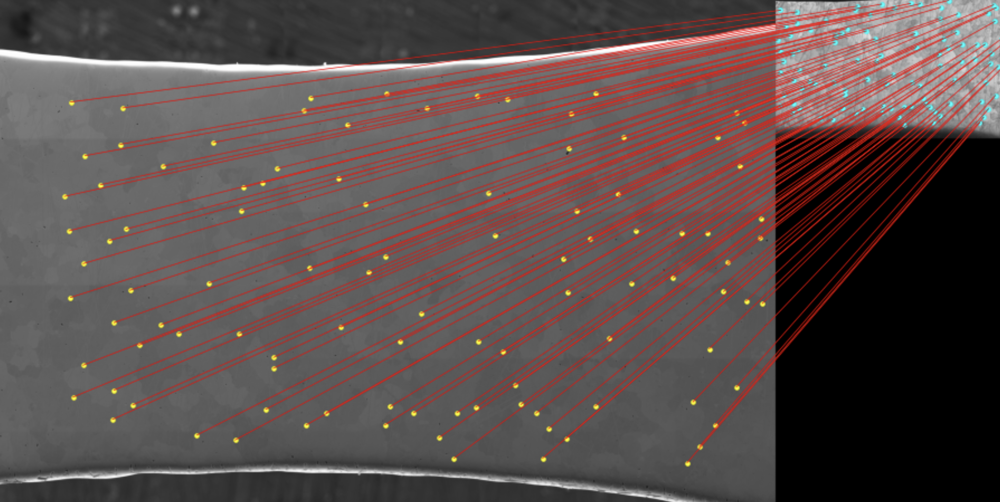

This module matches materials imagery obtained from different microscopy modalities. It currently utilizes the RoMa module for robust feature matching, with ongoing work to integrate additional multimodal approaches. The work builds on research conducted by the Pollock Research Group, Department of Materials, UCSB, and is currently under development.

Images in .tiff format from various microscopy sources
Warped Images and Correspondences
Please contact Vision Research Laboratory for more details.